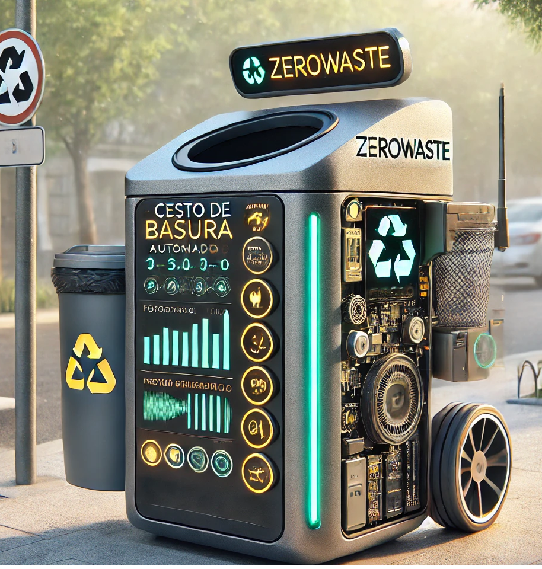

-Gerez, Nauel -Perez, Candela - Sanchez, Tomas- Sanchez, Tobias- Garigliano, Ian
El equipo de ZEROWaste pensó este proyecto de forma que sea un cesto de basura automático diseñado para contribuir a la recolección de residuos y la protección del medio ambiente. Este innovador cesto integra tres sensores clave: un sensor infrarrojo que abre la tapa automáticamente al detectar la proximidad de una persona, un sensor de gases que mide los niveles de contaminantes en el aire, y un sensor de ultrasonido que determina el porcentaje de capacidad del cesto.
Además, incorpora un mini servo que permite el funcionamiento automático de la tapa y una pantalla LCD que muestra en tiempo real el estado de los sensores. Este proyecto no solo facilita el desecho adecuado de residuos, sino que también promueve la conciencia sobre la calidad del aire, abordando así dos desafíos ambientales importantes: la gestión de residuos y la contaminación atmosférica.
-1. Desarrollar Habilidades Técnicas: Aprender y mejorar en programación, electrónica y diseño de prototipos mientras creamos juntos el cesto de basura automático.
-2. Fomentar el Trabajo en Equipo: Fortalecer la comunicación entre todos los miembros del grupo, trabajando en conjunto para lograr un resultado aceptable.
-3. Optimizar el Área de Trabajo: Mejorar cómo organizamos nuestras tareas y recursos, tanto en el ámbito digital como físico, para que el proceso sea más eficiente.
-4. Incentivar la Innovación: Promover la creatividad y el ingenio en nuestro grupo, buscando siempre nuevas formas de abordar los desafíos ambientales que nos afectan.